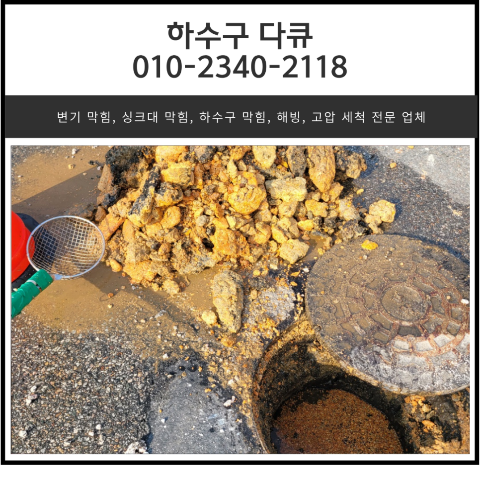
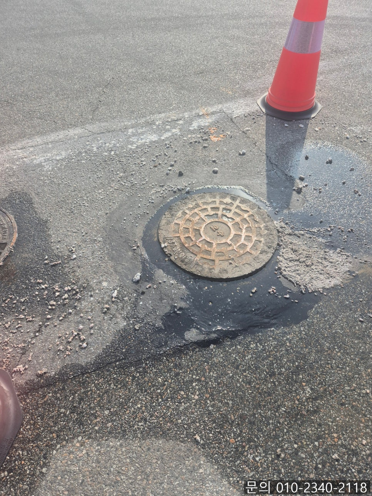
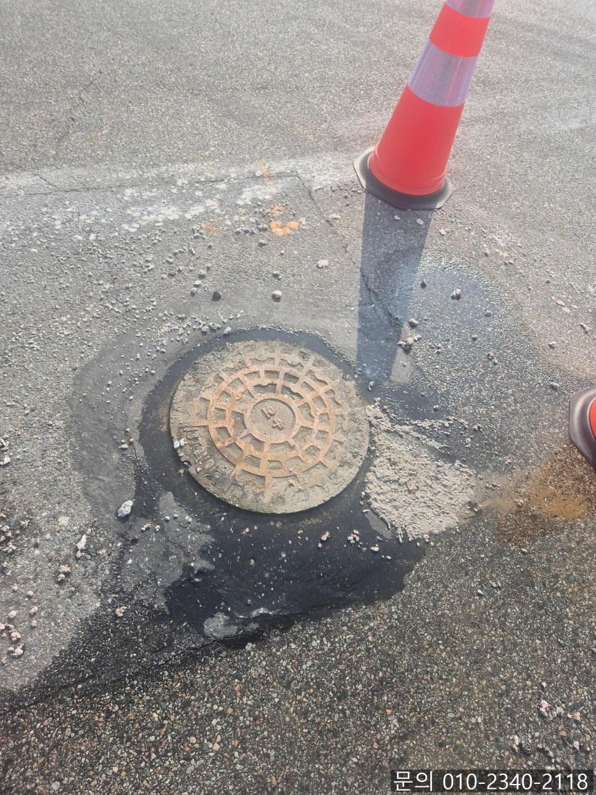
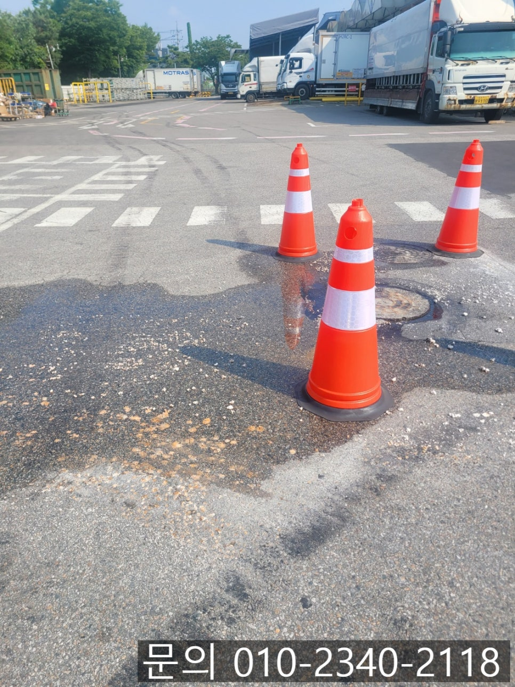
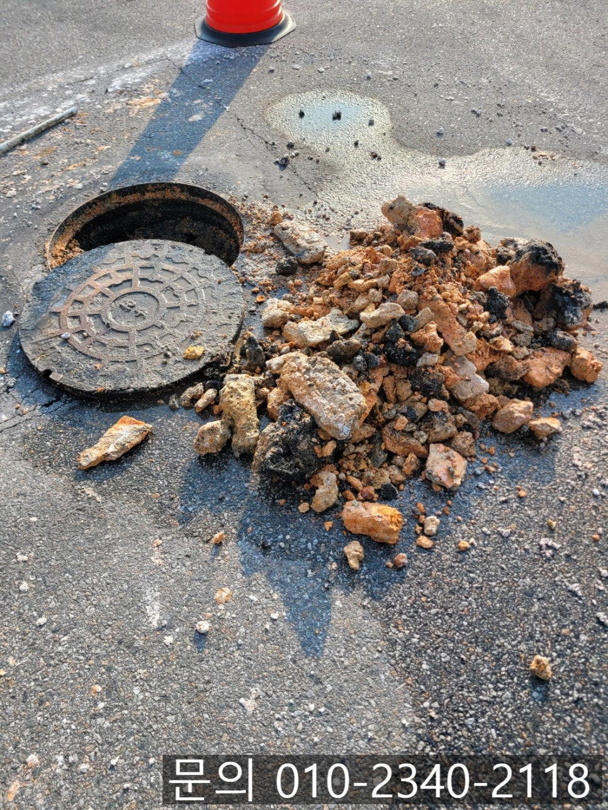
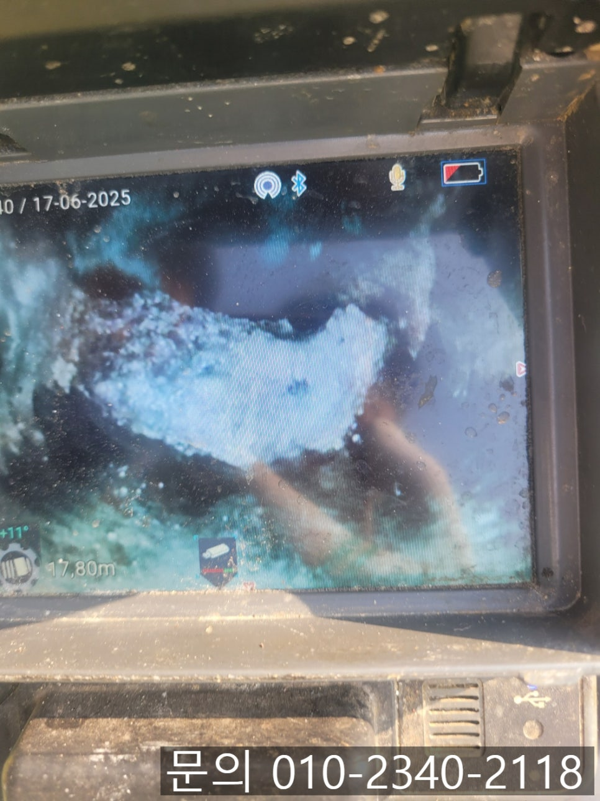
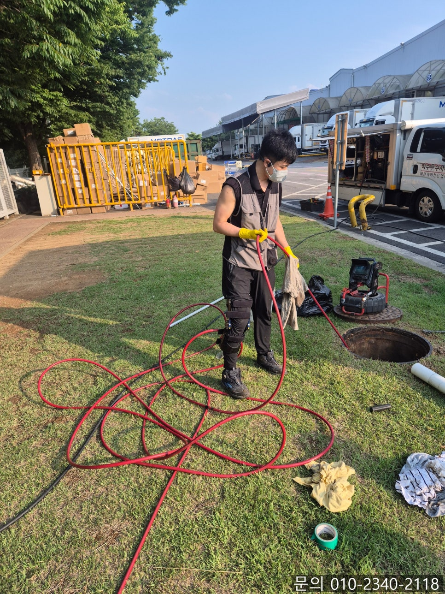

🏠 기흥동 하수구 막힘 용인시 서농동 공장 맨홀 역류 고압세척 전문 설비 업체
용인 기흥 하수구막힘 전문 시공 후기

📋 작업 개요
- 위치: 용인 기흥, 기흥, 용인
- 서비스 유형: 하수구막힘, 배관막힘, 맨홀막힘, 역류해결, 뚫는업체, 배관청소, 고압세척
- 작업 일시: 2025. 6. 24. 12:00
- 업체명: 하수구수사대 (010-5615-2118)
🔍 문제 상황
안녕하세요.
기흥동 하수구 막힘, 용인시 서농동 공장 맨홀 역류 고압세척 전문 설비 업체 하수구 다큐입니다.
현재 대한민국은 하수구 설비 업체 포화상태입니다.
많은 설비 업체 가운데 일 잘하고, 양심적인 업체를 찾기란 정말 쉽지 않습니다.
기흥동 하수구 막힘 현장처럼 같은 현장이더라도 어떤 설비 업체에 의뢰했느냐에 따라 문제를 해결하는 비용, 작업하는 방법 그리고 결과도 달라집니다.
그러다 보니 기흥동 하수구 막힘으로 설비 업체를 선정하실 때는 하수구 전문 장비를 보유하고 있는지, 작업은 어떻게 하는지 꼼꼼하게 체크하셔야 합니다.
타 설비 업체 실패 현장을 가다!

🔎 원인 분석
💡 전문가 진단: 타 설비 업체 실패 현장을 가다!
오늘은 타 업체에서 방문했다 실패하고 돌아간 기흥동 하수구 막힘 현장 사진과 함께 설비 업체 선정이 왜 중요한지 소개해 드릴게요.
공장의 하수와 폐수를 처리하는 맨홀에서 역류가 발생하게 되면 작업 환경, 위생 관리 등 다양한 영역에 영향을 미치기 때문에 문제가 발견된 즉시 원인을 찾아 대응하는 것이 정말 중요합니다.
최근 방문했던 기흥동 하수구 막힘 현장의 경우 공장 앞에 위치한 맨홀에서 하수구 역류가 발생해 근처 설비 업체에 배관 청소 작업을 의뢰했지만 전문적인 장비를 갖추지 않았다 보니 해결하지 못하고 돌아가셨다고 해요.
시간이 지체될수록 문제가 더 커질 수 있다 보니 고객님께서 네이버에 검색해서 꼼꼼하게 찾아본 다음 서농동 공장 맨홀 역류 고압세척 전문 설비 업체 하수구 다큐로 연락을 주셨습니다.
맨홀에서 역류가 일어났다는 말씀을 전해 듣고 필요한 장비를 챙겨 신속하게 현장으로 달려갔어요.
고객님께서 말씀하신 것처럼 맨홀에서 발생한 역류로 인해 악취가 진동하고 있는 상태였습니다.
앞서 현장에 방문했던 설비 업체에서 쌓여있는 이물질을 제거하다가 포기하고 간 흔적을 확인할 수 있었어요.
맨홀이 막혔을 때 뚫는 방법은 다양한데요.

🔧 작업 과정
서농동 공장 맨홀 역류 고압세척 전문 설비 업체 하수구 다큐는 역류하고 있는 맨홀이 아닌 물이 흘러가야 하는 다음 맨홀을 찾아 작업하기로 했습니다.
맨홀 사이의 배관이 막혀있는 상태이다 보니 두 번째 맨홀로 내시경 카메라를 진입시켜 막힘의 원인을 파악했습니다.
예상했던 대로 엄청난 양의 기름 슬러지가 단단하게 굳은 상태로 막고 있었어요.
서농동 공장 맨홀 역류 고압세척 전문 설비 업체 하수구 다큐는 고객님께 상황을 설명해 드린 다음 고압세척 장비를 이용해 배관 청소를 진행하기로 했습니다.
고압세척 장비는 현존하는 하수구 청소 장비 중 단연 최고라고 할 수 있는데요.
물탱크에 받아놓은 많은 양의 물을 짧은 시간 동안 높은 압력으로 흘려보내 배관을 막고 있는 기름 슬러지를 제거하게 됩니다.
배관의 크기가 크고, 길어 기름 슬러지가 많이 쌓여있는 현장에서도 높은 수압을 이용해 이물질을 제거하는데 탁월한 장비에요.
배관에서 빠져나오는 기름 슬러지 덩어리는 뜰채를 이용해 빼내주는 작업을 진행했어요.
고압세척 장비를 이용해 배관을 청소하고 흘러나오는 이물질은 다시 막힘이 발생하지 않도록 완전해 빼내주는 작업을 반복해서 진행해 나갔습니다.
제거된 일부분만 사진을 남겨놨는데요.
검은색 비닐로 열 봉지는 채워 버렸던 것 같습니다.
작업을 의뢰해 주신 고객님께서 타 설비 업체에서 작업을 실패했을 때 어려운 작업인 것 같아 해결이 안 되면 어쩌나 걱정을 많이 하셨다고 해요.


✅ 작업 완료
하지만 하수구 다큐가 정확히 상황을 파악하고 완벽하게 해결해 줘서 앞으로 하수구 막힘이 발생하면 무조건 연락 주신다고 하셨습니다.
앞서 말씀드렸던 것처럼 어떤 설비 업체에 작업을 의뢰하느냐에 따라 결과는 완전히 달라지게 됩니다.
지금 하수구 막힘으로 고민하고 계신다면, 다양한 현장 경험을 바탕으로 수많은 노하우와 하수구 지식을 갖추고 있는 하수구 다큐와 함께 해결해 보세요!
경기도 용인시 기흥구 동백중앙로 191 8층 c8736호




⚠️ 하수구 배관 막힘 예방 및 관리 가이드
- ✅ 머리카락, 비닐, 물티슈 등 물에 분해되지 않는 이물질은 하수구 유입을 절대 금지해 주세요.
- ✅ 하수구 거름망을 씌우고 모여진 이물질은 주기적으로 쓰레기통에 바로 비워주셔야 합니다.
- ✅ 배관 노후가 심할 경우 이물질이 더 쉽게 걸리므로 주기적인 배관 세척(고압세척 등)을 권장합니다.
- ✅ 작업 후 1년 이내 재발 시 하수구수사대에서 무상 A/S 보증 서비스를 제공합니다.
💡 핵심 정리
- 확실한 장비 작업(내시경 점검 및 샤프트 스케일링)으로 원인을 뿌리 뽑습니다.
- 작업 후 1년 이내에 동일한 부위 재발 시 100% 무상 A/S 서비스를 보장합니다.
- 서울 · 경기 · 인천 전 지역에 24시간 언제든 긴급 출동할 수 있도록 항시 대기 중입니다.
❓ 자주 묻는 질문 (FAQ)
🚨 용인 기흥 하수구막힘 문제로 고민이신가요?
정확한 원인 진단과 확실한 시공으로 재발 없는 해결을 약속드립니다.
24시간 긴급 출동 | 서울 · 경기 · 인천 전지역 | 1년 내 재발 시 무상 A/S